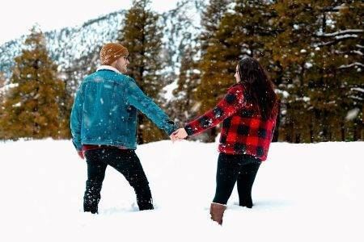
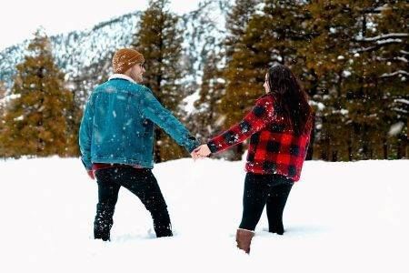

UPCOMING TOURS & DESTINATION
Here are some upcoming tours and destinations
1. Maldives - a tropical paradise known for its stunning beaches2. Egypt - a land of ancient wonders, including the Great Pyramids
3. Japan - a fascinating blend of traditional and modern culture
4. New Zealand - a nature lover's dream, with breathtaking landscapes
5. Spain - a country with vibrant cities, beautiful architecture Leran More

 
